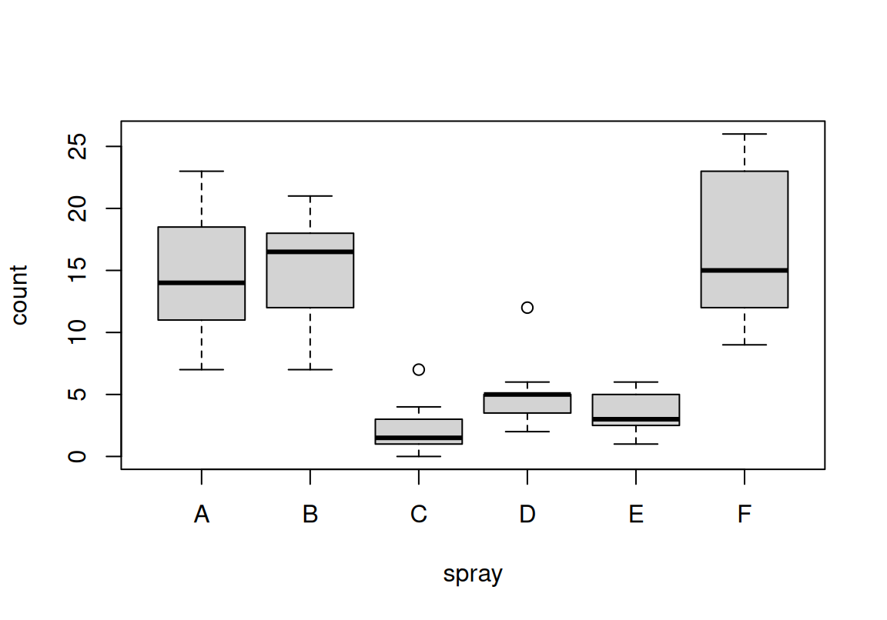

Chapter 6 R 데이터 프레임
이 장에서는 여러 타입의 데이터가 혼재된 데이터 프레임이란 데이터 구조를 다룬다. 보통 다른 통계 소프트웨어에서 데이터 분석의 기본 단위인 데이터 집합 또는 데이터 행렬이라고 불리는 것이다.
데이터 프레임의 두 측면: 리스트적 측면 행렬적 측면
데이터 프레임은 행렬을 일반화한 것으로 생각하면 이해하기 쉽다. 행렬에 속한 데이터는 모두 같은 타입인데 반해, 데이터 프레임은 각 열마다 각기 다른 타입의 데이터를 가질 수 있다. 데이터 프레임에는 한 열은 숫자 타입의 데이터가, 다른 한 열은 문자 타입의 데이터가 각각 들어갈 수 있다.
한 강의를 듣는 학생에 대한 표 6.1 같은 데이터가 있다고 하자. 이 데이터에는 중간고사, 기말고사 같이 숫자 데이터도 있지만, 학생 이름과 성별처럼 문자 데이터도 있다. 그리고 재수강 여부처럼 논리 값 데이터도 있다. 데이터의 형태는 다르지만 한 학생에 대한 정보를 얻기 위해서는 숫자, 문자, 논리 값을 포함한 데이터를 다룰 수 있어야 한다. 이 경우에 사용할 수 있는 데이터 구조가 데이터 프레임이다.
본질적으로 데이터 프레임은 ‘data.frame’ 클래스인 리스트이다. 리스트가 특정 조건을 만족하면 데이터 프레임이 될 수 있다. 리스트와 데이터 프레임의 관계에 대한 자세한 내용은 5 장을 참조하라.
| 번호 | 이름 | 학년 | 성별 | 중간고사 | 기말고사 | 재수강 |
|---|---|---|---|---|---|---|
| 1 | 김철수 | 1 | 남 | 74 | 91 | T |
| 2 | 김영희 | 4 | 여 | 82 | 77 | F |
| 3 | 이철수 | 3 | 남 | 67 | 88 | F |
| 4 | 이영희 | 2 | 여 | 89 | 78 | T |
| 5 | 홍길동 | 1 | 남 | 92 | 86 | F |
6.1 범주형 데이터와 요인 (Factors)
R 데이터 프레임의 각 열은 숫자, 문자, 논리 값 벡터 또는 요인으로 구성된다. 숫자, 문자, 논리 값 벡터에 대해서는 3 장에서 다루었다. 본 절에서는 R 데이터 프레임에 대하여 설명하기에 앞서 요인에 대하여 살펴보도록 한다.
6.1.1 명목형 변수와 요인
전국 유권자 대상으로 지지하는 정당에 대해 다음 설문조사를 하였다고 하자.
다음 중 지지하는 정당은? ( )
- A 정당
- B 정당
- C 정당
- 지지하는 정당 없음
범주 데이터의 숫자 코딩
10 명의 유권자에게 응답을 얻었다면 아마도 1부터 4까지의 숫자를 이용하여 다음과 같이 설문 결과를 입력하게 될 것이다.
[1] 1 3 2 4 3 2 1 3 2 2여기서 숫자로 코딩된 설문 결과는 1부터 4까지의 수량적 의미를 가지기보다는 4가지 범주(A 정당, B 정당, C 정당, 없음)의 차이를 숫자로 표현한 것 뿐이다. 그런데 이렇게 범주형 데이터를 숫자 벡터로 표현하는 것은 범주형 데이터를 편리하게 코딩할 수 있는 장점이 있는 반면 다음과 같은 단점을 가진다.
숫자 코딩의 문제점
- 결과가 숫자 벡터로 입력되었으므로 다음처럼 어떤 범주에도 대응되지 않는 잘못된 숫자가 입력될 수도 있다.
[1] 5 3 2 4 3 2 1 3 2 2- 결과를 숫자형 데이터로 오인하여 잘못된 처리를 수행할 수 있다. 입력하는 시점에는 오인을 할 가능성이 적지만 데이터를 분석하는 과정에서 주의를 기울이지 않으면 범주형 데이터를 숫자 데이터로 오인하여 잘못된 분석을 수행할 수 있다. 다음은 범주형 데이터를 나타내는 벡터를 수량 데이터로 오인하여 평균을 분석한 예이다.
[1] 2.7- 데이터 입력 후 제대로 기록해 두지 않으면 각 숫자의 의미가 무엇인지 파악하기 어렵게 된다.
factor()
이러한 문제를 해결하기 위해 R은 범주형 데이터를 처리할 때 이용할 수 있는 요인(factor)이라는 데이터 형태를 제공한다. 요인을 생성하기 위해서 factor() 함수를 이용한다.
수준 levels
다음은 숫자로 코딩된 결과(results)를 이용하여 1, 2, 3, 4 수준(level)을 가진 요인을 생성한 예이다. 요인에서 수준은 요인 데이터가 가질 수 있는 차별적 값을 나타낸다.
[1] 5 3 2 4 3 2 1 3 2 2NULL [1] <NA> 3 2 4 3 2 1 3 2 2
Levels: 1 2 3 4$levels
[1] "1" "2" "3" "4"
$class
[1] "factor"결과에서 보듯이 수준에 포함되지 않은 5의 값은 NA로 변환된다. 요인으로 변경된 데이터의 클래스는 factor가 되고, levels 속성이 지정되어 있음을 볼 수 있다. results의 첫 번째 데이터를 제대로 된 값인 1로 변경한 후 다시 한번 요인으로 변경해 보자.
[1] 1 3 2 4 3 2 1 3 2 2
Levels: 1 2 3 4만약 요인 데이터에 이미 정의된 수준을 제외한 다른 값을 입력하면 다음과 같이 경고가 출력되고 입력된 데이터는 NA로 입력됨을 볼 수 있다.
[1] 1 3 2 4 3 2 1 3 2 2 4
Levels: 1 2 3 4Warning in `[<-.factor`(`*tmp*`, 12, value = 5): 요인의 수준(factor level)이
올바르지 않아 NA가 생성되었습니다. [1] 1 3 2 4 3 2 1 3 2 2 4 <NA>
Levels: 1 2 3 4만약 요인 데이터를 숫자 벡터로 착각하여 평균을 구하려고 해 보자. 먼저 fResults의 데이터를 원래대로 돌려놓은 후 mean() 함수로 평균을 구해보자. 그러면 숫자 데이터가 아니므로 평균을 구할 수 없음을 알 수 있다.
[1] 1 3 2 4 3 2 1 3 2 2 4 2
Levels: 1 2 3 4Warning in mean.default(fResults): 인자가 수치형 또는 논리형이 아니므로 NA를
반환합니다[1] NAlevels()
요인의 수준을 좀 더 의미있는 형태로 바꾸어 보자. 그러면 요인에 입력된 숫자가 각각 어떤 범주에 대응하는지를 쉽게 파악할 수 있다.
[1] "1" "2" "3" "4" [1] A C B None C B A C B B None B
Levels: A B C None이제 fResults 요인을 출력해 보면 각 데이터가 수준에 정의된 문자로 표현됨을 볼 수 있다. 그러면 fResults는 문자 데이터로 변환된 것일까? 그렇지 않다. 요인은 내부적으로 데이터를 각각의 범주를 1부터 시작하는 자연수로 관리한다. 이 예에서는 4가지 서로 다른 범주(수준)이 있으므로 1부터 4까지의 자연수로 데이터를 표현한다. 단지 입출력될 때 요인에 부여된 수준으로 처리를 할 뿐이다. 이를 확인하기 위해서 typeof() 함수로 요인의 근원적 타입을 확인하고, unclass() 함수를 이용하여 요인이 내부적으로 어떤 정보를 가지고 있는지 확인해 보자.
[1] "integer"[1] "factor" [1] 1 3 2 4 3 2 1 3 2 2 4 2
attr(,"levels")
[1] "A" "B" "C" "None"요인이 내부적으로 숫자로 데이터를 표현하고 있다고 하더라도, 수준에 정의되지 않은 숫자로 데이터를 입력할 수는 없다. 요인은 항상 수준에 정의되어 있는 데이터 값만으로 입력되거나 출력될 수 있다.
[1] "A" "B" "C" "None"Warning in `[<-.factor`(`*tmp*`, 11, value = 4): 요인의 수준(factor level)이
올바르지 않아 NA가 생성되었습니다. [1] A C B None C B A C B B <NA> None
Levels: A B C None6.1.2 순서형 변수와 요인
범주형 데이터는 앞의 예처럼 범주 간에 순서가 없는 명목형 데이터도 있지만, 범주 간에 순서가 있는 순서형 데이터도 있다. 전국 유권자 대상으로 현 정권에 대한 만족도에 대해 다음 설문조사를 하였다고 하자.
현 정권의 국정 수행에 대해 만족하고 계십니까? ( )
- 매우 불만
- 불만
- 보통
- 만족
- 매우 만족
설문 결과를 다음과 같이 요인을 가지고 결과를 코딩할 수 있을 것이다. 그러나 요인은 디폴트로 수준 간에 순서가 없는 명목형 변수로 데이터를 처리한다. 그러므로 순서를 비교하는 비교 연산을 적용할 수 없다.
satisfaction <- c("매우 불만", "매우 만족", "불만", "만족", "보통",
"불만", "매우 불만", "보통", "매우 만족", "불만")
fSatisfaction <- factor(satisfaction,
levels=c("매우 불만", "불만", "보통", "만족", "매우 만족"))
fSatisfaction [1] 매우 불만 매우 만족 불만 만족 보통 불만 매우 불만
[8] 보통 매우 만족 불만
Levels: 매우 불만 불만 보통 만족 매우 만족Warning in Ops.factor(fSatisfaction, "만족"): 요인(factors)에 대하여 의미있는
'>='가 아닙니다. [1] NA NA NA NA NA NA NA NA NA NAordered 인수로 순서형 변수 만들기
명목형 데이터를 나타내는 요인의 숫자는 각 범주를 표현하는 의미를 가지므로 앞의 맨 마지막 예처럼 순서를 비교하는 연산을 수행할 수 없다. 그런데 이 경우에는 범주 간에 순서적 의미가 있으므로 factor() 함수의 ordered 인수를 설정하여 범주 간의 순서 관계를 명확히 할 수 있다. 다음 예에서 볼 수 있듯이 범주 간의 순서가 수준이 출력될 때 명시됨을 볼 수 있고, 순서 비교가 가능함을 볼 수 있다. 심지어는 order() 함수로 순서를 파악할 수 있다.
oSatisfaction <- factor(satisfaction, ordered = TRUE,
levels=c("매우 불만", "불만", "보통", "만족", "매우 만족"))
oSatisfaction [1] 매우 불만 매우 만족 불만 만족 보통 불만 매우 불만
[8] 보통 매우 만족 불만
Levels: 매우 불만 < 불만 < 보통 < 만족 < 매우 만족 [1] FALSE TRUE FALSE TRUE FALSE FALSE FALSE FALSE TRUE FALSE[1] 3[1] 0.3 [1] 1 7 3 6 10 5 8 4 2 9R은 범주형 변수인 ’불만’과 ’만족’의 순서를 알 수 없다. ordered() 함수로 순서형 범주를 만들 때 levels에 나열된 순서로 크기가 주어진다고 가정한다. 만약 위의 예에서 levels의 순서가 다르면 다른 결과가 나올 것이다.
oSatisfaction <- factor(satisfaction, ordered = TRUE,
levels=c("매우 만족", "만족", "보통", "불만", "매우 불만"))
oSatisfaction [1] 매우 불만 매우 만족 불만 만족 보통 불만 매우 불만
[8] 보통 매우 만족 불만
Levels: 매우 만족 < 만족 < 보통 < 불만 < 매우 불만 [1] TRUE FALSE TRUE TRUE TRUE TRUE TRUE TRUE FALSE TRUE[1] 8[1] 0.8 [1] 2 9 4 5 8 3 6 10 1 7수준의 순서
순서형이 아닌 명목형 범주 데이터는 factor()로 만들어지고 이 때도 levels에 주어진 순서로, 범주(수준)가 내부적으로 저장되는 숫자가 결정된다. levels에 언급된 수준의 순서대로 1번부터 차례로 숫자가 부여된다. 순서형 범주 데이터처럼 순서가 데이터 분석에 핵심적인 역할을 하지는 않지만, 그래프나 표가 표현될 때 이 범주(수준)의 순서대로 출력되므로, 범주를 원하는 순서대로 출력하고자 하면 levels 인수에 수준의 순서를 명시하는 것이 좋다. 그렇지 않으면 단어의 사전적 순서 등에 의해 순서가 부여된다.
[1] F M F M F
Levels: F M[1] 1 2 1 2 1
attr(,"levels")
[1] "F" "M"fa1
F M
3 2 [1] F M F M F
Levels: M F[1] 2 1 2 1 2
attr(,"levels")
[1] "M" "F"fa2
M F
2 3 relevel()과 reorder()를 이용한 수준의 순서 변경
앞의 예에서는 factor() 함수의 levels 인수를 사용하여 수준의 순서를 바꾸는 방법을 보았다.
이러한 방법은 수준의 수가 적을 때는 편리한 방법이지만, 수준의 수가 많으면 모든 수준을 levels 인수에 나열하여야 하기 때문에 불편하다.
예를 들어, 분석의 주안점이 되는 수준이 있고, 나머지 수준의 순서는 중요하지 않은 경우, 관심의 대상이 되는 수준이 맨 앞에 오도록 순서를 변경하려면 factor() 함수의 levels 인수에 모든 수준을 다시 나열해 주어야 하므로 불편하다.
이러한 경우에는 relevel() 함수를 사용하면 원하는 결과를 쉽게 얻을 수 있다.
다음의 fResult 요인에서 "None"이라는 수준이 맨 앞에 나타나도록 변경하고자 한다.
[1] A C B None C B A C B B <NA> None
Levels: A B C Nonerelevel() 함수의 ref 인수에 맨 앞에 나타날 수준을 지정하면 나머지 수준의 순서는 변하지 않고 지정된 수준만 앞으로 이동하게 된다.
[1] A C B None C B A C B B <NA> None
Levels: None A B CfResults2
None A B C
2 2 4 3 InsectSprays는 살충제의 종류(spray)와 농작물에 있는 해충의 수(count)를 보여주는 데이터이다.
살충제의 종류는 6 개의 수준을 가지는 요인이다.
count spray
1 10 A
2 7 A
3 20 A
4 14 A
5 14 A
6 12 A [1] A A A A A A A A A A A A B B B B B B B B B B B B C C C C C C C C C C C C D D
[39] D D D D D D D D D D E E E E E E E E E E E E F F F F F F F F F F F F
Levels: A B C D E F다음은 살충제 종류에 따른 해충의 수의 분포를 상자 그래프로 나타낸 것이다.

그런데 이런 데이터는 살충력이 높은 것에서 낮은 것 순으로 배열되는 것이 더 이해하기가 쉽다.
그러한 형태로 그래프를 그리려면 요인이 spray 열의 수준이 count의 중위수가 낮은 것부터 높은 것 순으로 정렬되어야 한다.
reorder() 함수를 사용하면 이러한 수준의 변경을 손 쉽게 할 수 있다.
reorder()는 첫 번째 인수로 요인을, 두 번째 인수로 요인의 수준을 결정할 다른 수치 벡터를, 세 번째 인수로 수치 벡터에 적용할 통계 함수를 지정한다. 그러면 수치 벡터를 요인의 수준 별로 나누어 통계 함수를 적용한 후, 가장 낮은 값에서 큰 값으로 수준의 순서를 재정렬한다.
labels 인수
요인을 만든 후 기존의 수준을 변경하고 싶으면 levels() 함수를 이용하여 새로운 수준을 할당한다고 설명하였다. 그러나 요인을 만들 때 기존에 코딩된 수준을 바로 변경하고 싶을 수가 있다. 이 경우에는 factor() 함수에 labels 인수를 이용하면 기존의 수준이 labels 인수에 주어진 형태로 변경된다. 이 때 주의할 점은 levels 인수는 원래 데이터가 코딩된 형태로 정의되어야 하고, labels 인수는 바꿀 코딩 형태로 정의되어야 한다.
[1] Female Male Female Male Female
Levels: Male Female[1] 2 1 2 1 2
attr(,"levels")
[1] "Male" "Female"fa3
Male Female
2 3 Warning in `[<-.factor`(`*tmp*`, 6, value = "M"): 요인의 수준(factor level)이
올바르지 않아 NA가 생성되었습니다.6.2 데이터 프레임 만들기
data.frame()
data.frame() 함수를 이용하면 벡터, 행렬, 요인, 심지어 다른 데이터 프레임을 묶어서 새로운 데이터 프레임을 만들 수 있다. 이 때 다음과 같은 제한 조건이 있다.
첫째, 벡터는 모두 같은 길이를 가져야 하며 행렬과 데이터 프레임은 모두 같은 행 수를 가져야 한다. 벡터의 같은 위치의 데이터와 행렬 및 데이터 프레임의 같은 행에 있는 데이터가 연결되어 하나의 데이터 단위가 된다.
둘째, 벡터는 하나의 벡터가 데이터 프레임의 하나의 열이 되지만, 행렬, 데이터 프레임은 각 열이 데이터 프레임의 하나의 열이 된다.
이러한 사실을 염두하면서 표 6.1의 데이터를 데이터 프레임으로 만들어 본다. 먼저 학생이름, 학년, 성별로만 이루어진 데이터 프레임을 만들어 보자.
name <- c("김철수", "김영희", "이철수", "이영희", "홍길동")
grade <- c(1, 4, 3, 2, 1)
gender <- c(" M", "F", "M", "F", "M")
student <- data.frame(name, grade, gender)
student name grade gender
1 김철수 1 M
2 김영희 4 F
3 이철수 3 M
4 이영희 2 F
5 홍길동 1 M위의 예에서는 길이가 같은 벡터와 요인을 인수로 해서 데이터 프레임을 만들었다. 데이터 프레임을 출력해 보면 자동으로 행 번호가 부여되어 있음을 볼 수 있다. 열의 이름으로 각각 벡터와 요인을 저장한 변수명이 부여되었음을 볼 수 있다.
이번에는 만들어진 데이터 프레임에 중간, 기말 고사 점수와 재수강 여부를 포함시켜 새로운 데이터 프레임을 만들어 보자. 아래 예에서는 중간, 기말 고사 점수를 행렬로 먼저 만든 후 데이터 프레임에 포함시켜 보았다.
midterm final
[1,] 74 91
[2,] 82 77
[3,] 67 88
[4,] 89 78
[5,] 92 86rt <- c(TRUE, FALSE, FALSE, TRUE, FALSE)
students <- data.frame(student, scores, retake = rt)
students name grade gender midterm final retake
1 김철수 1 M 74 91 TRUE
2 김영희 4 F 82 77 FALSE
3 이철수 3 M 67 88 FALSE
4 이영희 2 F 89 78 TRUE
5 홍길동 1 M 92 86 FALSE위에서 새로운 데이터 프레임의 각 열의 이름은 기존 데이터 프레임의 각 열의 이름, 행렬의 열 이름이 자동으로 부여되고 있음을 볼 수 있다. 재수강 여부 데이터벡터 rt는 data.frame()이 호출될 때, retake = rt 형태로 인수를 전달하여 새로운 데이터 프레임에서는 이름이 retake로 변경되었다. 데이터 프레임을 생성할 때 각 열에 이름을 부여하고 싶으면 이와 같은 방식으로 이름을 부여하면 된다.
cbind()
앞서 설명하였듯이 데이터 프레임은 행렬적인 외양을 가지고 있으므로 행렬처럼 cbind()나 rbind()를 이용하여 행과 열을 추가할 수 있다. 다음 예는 cbind를 이용하여 중간과 기말의 총점 열을 추가한 예이다.
name grade gender midterm final retake total.scores
1 김철수 1 M 74 91 TRUE 165
2 김영희 4 F 82 77 FALSE 159
3 이철수 3 M 67 88 FALSE 155
4 이영희 2 F 89 78 TRUE 167
5 홍길동 1 M 92 86 FALSE 178rbind()
다음 예는 rbind()로 새로운 데이터 행을 추가한 예이다. 이 때 주의할 점은 추가할 데이터의 각 항목의 이름과 형식이 일치해야 한다는 것이다.
name grade gender midterm final retake
1 Jane Eyre 4 F 90 85 FALSE name grade gender midterm final retake
1 김철수 1 M 74 91 TRUE
2 김영희 4 F 82 77 FALSE
3 이철수 3 M 67 88 FALSE
4 이영희 2 F 89 78 TRUE
5 홍길동 1 M 92 86 FALSE
6 Jane Eyre 4 F 90 85 FALSE6.3 데이터 프레임 각 열의 지정
데이터 프레임은 리스트 타입
생성된 데이터 프레임에 대해 typeof() 함수와 attributes() 함수를 이용하여 타입과 속성을 알아보자. 다음 결과에서 데이터 프레임은 리스트 타입이며, names 속성에 데이터 프레임의 각 열의 이름이 나열되어 있음을 볼 수 있다.
[1] "list"$names
[1] "name" "grade" "gender" "midterm" "final" "retake"
$class
[1] "data.frame"
$row.names
[1] 1 2 3 4 5리스트 형식으로 데이터 프레임의 열 지정
데이터 프레임은 본질적으로 리스트 타입이므로 데이터 프레임의 각 열은 리스트의 요소가 된다. 따라서 데이터 프레임의 각 열을 지정할 때는 리스트의 각 요소를 지정할 때와 마찬가지로, $ 기호 또는 [[ ]]를 이용하여 다음과 같은 형태로 지정하면 된다. 이는 데이터 프레임이 리스트 타입이기 때문에 리스트와 같은 방식으로 요소들에 접근할 수 있기 때문이다. 리스트에 대한 자세한 설명은 5 장을 확인하기 바란다.
다음은 위에서 생성한 students의 각 열을 이름으로 지정하여, 학생의 성별 데이터, 중간, 기말고사를 출력한 예이다.
[1] " M" "F" "M" "F" "M" [1] 74 82 67 89 92[1] 91 77 88 78 86[1] "김철수" "김영희" "이철수" "이영희" "홍길동"[1] "character"데이터 프레임의 각 열은 벡터
데이터 프레임의 각 열은 벡터이므로 데이터 프레임의 특정 열을 리스트 필터링과 같은 방식으로 지정한 후, 벡터 연산이나 벡터 인덱스를 이용하여 각 요소의 값을 출력하거나 변경할 수 있다.
[1] 148 164 134 178 184[1] 404[1] 92[1] 67 89 50또한 리스트에 새로운 요소를 추가할 때와 마찬가지 방법으로 열을 추가할 수도 있다. 다음 예는 hw이라는 이름으로 숙제 점수 열을 추가하는 예이다.
name grade gender midterm final retake hw
1 김철수 1 M 74 91 TRUE 8
2 김영희 4 F 82 77 FALSE 9
3 이철수 3 M 67 88 FALSE 7
4 이영희 2 F 89 78 TRUE 8
5 홍길동 1 M 50 86 FALSE 106.4 데이터 프레임의 필터링
데이터를 분석하다 보면 작업 중인 데이터 프레임의 일부만을 선택하여 작업을 할필요가 있다. 어떤 경우에는 데이터의 일부분만 변경할 필요가 있다. 필요 없는 열을 제거하거나 새로운 열을 추가하기 위해서는 여러 열을 한번에 지정할 수도 있어야 한다.
이러한 작업을 수행하기 위해서는 데이터 프레임의 일부분을 지정하는 필터링을 수행하여야 한다. 데이터 프레임은 리스트를 기본적인 속성으로 하기 때문에 리스트로서 부분을 필터링하는 방법이 있고, 행렬적 외양을 가지고 있기 때문에 행렬처럼 필터링을 하는 방법이 있다.
6.4.1 리스트 형식으로 필터링
데이터 프레임은 리스트 구조를 가지고 있으며, 데이터 프레임의 열은 리스트의 각 요소가 된다. 따라서 5 장에서 이용한 리스트의 부분 필터링을 수행하는 방법으로 데이터 프레임의 일부 열만 필터링을 수행할 수 있다.
리스트로서 필터링은 1차원 인덱스 구조를 갖는다.
리스트로서 데이터 프레임을 필터링하는 방법은 아래와 같이 인덱스 벡터를 이용하는 것이다. 여기서 인덱스 벡터는 벡터나 리스트의 인덱스 벡터와 마찬가지로 숫자, 이름, 논리값 벡터가 될 수 있다.
다음 예는 students 데이터 프레임에서 열의 인덱스를 숫자, 이름, 논리값으로 각각 지정하여 새로운 데이터 프레임을 만든 경우이다.
name grade
1 김철수 1
2 김영희 4
3 이철수 3
4 이영희 2
5 홍길동 1 gender midterm final retake hw
1 M 74 91 TRUE 8
2 F 82 77 FALSE 9
3 M 67 88 FALSE 7
4 F 89 78 TRUE 8
5 M 50 86 FALSE 10 gender grade
1 M 1
2 F 4
3 M 3
4 F 2
5 M 1 name midterm final hw
1 김철수 74 91 8
2 김영희 82 77 9
3 이철수 67 88 7
4 이영희 89 78 8
5 홍길동 50 86 10data.frame() 함수를 이용하면 기존의 데이터 프레임에 새로운 열을 추가하여 새로운 데이터 프레임도 만들 수 있다. 다음 예는 기존의 students 데이터 프레임에 키 데이터를 추가한 경우이다.
height <- c(172, 167, 181, 162, 178)
students.new <- data.frame(students[2:3], height=height)
students.new grade gender height
1 1 M 172
2 4 F 167
3 3 M 181
4 2 F 162
5 1 M 178열 지정하기 vs. 한 열만 데이터 프레임으로 필터링
앞서 설명하였듯이 데이터 프레임은 리스트이므로 데이터 프레임의 한 열만을 지정할 때 []뿐 아니라 [[]]나 와 $를 이용해 한 열을 지정할 수 있다. 두 방식의 차이는 전자가 데이터 프레임에서 지정된 열만으로 이루어진 새로운 데이터 프레임을 반환하는 반면, 후자는 데이터 프레임에 있는 열 자체, 즉 벡터를 반환한다. 아래는 students 데이터 프레임에서 []와 [[]]를 이용하여 두번째 열을 지정한 결과이다.
grade
1 1
2 4
3 3
4 2
5 1[1] "list"$names
[1] "grade"
$row.names
[1] 1 2 3 4 5
$class
[1] "data.frame"[1] 1 4 3 2 1[1] "double"NULL지금까지 설명한 내용은 데이터 프레임이 리스트 타입이기 때문에 성립하는 내용이다. 따라서 지금까지 설명한 내용은 리스트에도 모두 적용된다.
6.4.2 행렬 형식으로 필터링
행렬로서 필터링은 2차원 인덱스 구조를 갖는다.
데이터 프레임은 열의 길이가 모두 같기 때문에, 보통의 리스트에는 없는 행렬과 같은 필터링 방법이 존재한다. 특히 기존의 데이터 프레임에 행을 삭제 또는 추가할 필요가 있는 경우 이러한 행렬 방식의 필터링 방법은 매우 유용한다.
데이터 프레임의 인덱스 벡터의 사용은 다음과 같이 행렬의 방식과 동일하게 행과 열을 독립적으로 지정하는 2차원 인덱스 구조를 가진다.
다음은 students 데이터 프레임에서 행렬 인덱스 벡터를 이용하여 데이터의 일부를 지정한 예이다.
name grade gender midterm final retake hw
1 김철수 1 M 74 91 TRUE 8 name grade gender midterm final retake hw
2 김영희 4 F 82 77 FALSE 9
3 이철수 3 M 67 88 FALSE 7 name grade gender midterm final retake hw
1 김철수 1 M 74 91 TRUE 8
4 이영희 2 F 89 78 TRUE 8
5 홍길동 1 M 50 86 FALSE 10[1] 74 82 67 89 50 name grade gender final retake hw
1 김철수 1 M 91 TRUE 8
2 김영희 4 F 77 FALSE 9
3 이철수 3 M 88 FALSE 7
4 이영희 2 F 78 TRUE 8
5 홍길동 1 M 86 FALSE 10 grade midterm
1 1 74
2 4 82
3 3 67
4 2 89
5 1 50 gender midterm final
2 F 82 77
3 M 67 88
4 F 89 78[1] FALSE TRUE FALSE TRUE FALSE name grade gender midterm final retake hw
2 김영희 4 F 82 77 FALSE 9
4 이영희 2 F 89 78 TRUE 8 name grade gender
2 김영희 4 F
4 이영희 2 F name grade gender
2 김영희 4 F
3 이철수 3 M
4 이영희 2 F행렬 필터링 방법을 이용한 데이터 프레임 정렬
행렬과 마찬가지로 데이터 프레임을 특정 열을 기준으로 정렬할 수 있다. 다음은 학년을 기준으로 데이터 프레임을 정렬한 예와, 기말고사 점수가 높은 학생부터 낮은 학생 순으로 정렬한 예이다.
[1] 1 5 4 3 2 name grade gender midterm final retake hw
1 김철수 1 M 74 91 TRUE 8
5 홍길동 1 M 50 86 FALSE 10
4 이영희 2 F 89 78 TRUE 8
3 이철수 3 M 67 88 FALSE 7
2 김영희 4 F 82 77 FALSE 9[1] 1 3 5 4 2 name grade gender midterm final retake hw
1 김철수 1 M 74 91 TRUE 8
3 이철수 3 M 67 88 FALSE 7
5 홍길동 1 M 50 86 FALSE 10
4 이영희 2 F 89 78 TRUE 8
2 김영희 4 F 82 77 FALSE 9만약 학생을 학년으로 정렬을 한 후, 동일 학년이면 기말고사가 높은 사람이 먼저 나오게 정렬하고자 하면 어떻게 할까? 사실 order() 함수는 길이가 같은 여러 개의 벡터를 차례대로 비교하여 순위를 결정할 수 있다. order()의 인수 중 맨처음 나열된 벡터를 기준으로 순서를 결정하지만, 동률이 있으면 두번째로 나열된 벡터를 기준으로 동률 간의 순서를 결정한다. 두번째 벡터에서도 동률이면 다음에 나열된 벡터를 기준으로 이용한다. 예를 들어 학생을 학년 순서로 정렬하는데, 학년이 동률인 경우 기말고사 점수로 순서를 정한다고 하자. 그러면 다음과 같이 order() 함수를 기술하면 된다.
[1] 5 1 4 3 2 name grade gender midterm final retake hw
5 홍길동 1 M 50 86 FALSE 10
1 김철수 1 M 74 91 TRUE 8
4 이영희 2 F 89 78 TRUE 8
3 이철수 3 M 67 88 FALSE 7
2 김영희 4 F 82 77 FALSE 9그런데 우리는 학년은 낮은 학년부터 높은 학년으로 정렬하지만 기말고사는 높은 점수에서 낮은 점수로 정렬하고자 한다. order() 함수의 decreasing 인수를 TRUE로 하면 학년마저 높은 순에서 낮은 순으로 되니 원하는 결과를 얻을 수 없다. 이런 경우에는 첫번째 벡터는 그대로 두고, 두번째 벡터에 -1을 곱한 후 순서를 정렬하면 원하는 결과를 얻을 수 있다.
name grade gender midterm final retake hw
2 김영희 4 F 82 77 FALSE 9
3 이철수 3 M 67 88 FALSE 7
4 이영희 2 F 89 78 TRUE 8
1 김철수 1 M 74 91 TRUE 8
5 홍길동 1 M 50 86 FALSE 10 name grade gender midterm final retake hw
1 김철수 1 M 74 91 TRUE 8
5 홍길동 1 M 50 86 FALSE 10
4 이영희 2 F 89 78 TRUE 8
3 이철수 3 M 67 88 FALSE 7
2 김영희 4 F 82 77 FALSE 96.4.3 subset()을 이용한 필터링
subset()4 함수는 벡터, 행렬, 데이터 프레임에서 조건에 맞는 부분을 반환하는 함수이다. 지금까지 우리는 벡터, 행렬, 데이터 프레임을 필터링할 때, 인덱스 벡터를 이용하여 이를 수행하였다. 사실 데이터 처리에 필요한 거의 모든 작업은 subset()을 이용할 필요가 없이, 지금까지 설명한 인덱스 벡터를 이용하여 필터링을 수행하면 된다. 그러나 subset() 함수를 이용하면 지금까지의 필터링 방법을 좀 더 쉽게 할 수 있는 경우가 있다. subset() 함수는 다음과 같은 형식을 가진다.
subset()
subset() 함수로 필터링하는 방법과 인덱스 벡터를 이용하는 필터링과의 차이점은 다음 3가지이다.
- 조건에 부합하는 행을 필터링 할 때, subset() 함수는 subset 인수에 조건을 기술한다. 인덱스 벡터는 자연수, 음의 정수, 논리값, 문자열이 모두 가능하지만, subset에서는 논리값만 가능하다. subset에서는 열을 변수처럼 기술할 수 있기 때문에 행 필터링 조건을 인덱스 벡터를 이용하는 방법보다 좀 더 간편하게 기술할 수 있다.
- subset() 함수를 이용한 필터링에서는 subset의 조건식의 결과가 NA인 경우는 FALSE로 평가하여 NA 행을 자동으로 제거한다. 인덱스 벡터를 이용하는 경우는 조건식의 결과가 NA이어도 그 행은 제거되지 않는다.
- 열을 필터링할 때, 인덱스 벡터를 이용한 필터링에서는 열의 번호나 이름으로 필터링할 열을 지정한다. 열의 이름으로 필터링 할 때는 반드시 문자열로 열의 이름이 표시된다. subset()의 경우 선택할 열은 select 인수로 표현하는데, 열의 이름을 따옴표 없이 변수처럼 그대로 기술한다. 그러면 열의 이름이 열의 번호로 대체되어 최종적으로 필터링이 수행된다.
위에서 설명한 내용이 어떤 의미인지를 벡터, 행렬, 데이터 프레임의 경우에서 각각 살펴보도록 한다.
subset()을 이용한 벡터 필터링
[1] 7 9 NA[1] 7 9위의 예에서 보듯이 벡터를 필터링할 때, 인덱스 벡터를 이용하는 방법은 NA가 있는 경우 그 결과를 알 수 없으므로 필터링한 결과에도 NA로 표시한다. 그러나 subset() 함수는 NA를 자동으로 제거함을 알 수 있다.
subset()을 이용한 데이터 프레임 필터링
x y z
1 7 1 -1
2 9 2 -2
3 NA 3 -3
4 5 4 -4
5 2 5 -5 x y z
1 7 1 -1
2 9 2 -2
NA NA NA NA x y z
1 7 1 -1
2 9 2 -2위의 예에서 보듯이 인덱스 벡터를 이용하는 경우에는 데이터 프레임의 열을 지정하기 위해서 $ 앞에 데이터 프레임 이름을 일일이 지정해야 했다. 그러나 subset()의 경우 두번째 인수에 열을 그냥 변수처럼 기술한다.
인덱스 벡터를 이용하는 방법은 NA가 있는 경우 그 결과를 알 수 없으므로 필터링한 결과에도 NA로 표시한다. 그러나 subset() 함수는 NA를 자동으로 제거한다.
y z
1 1 -1
2 2 -2
NA NA NA y z
1 1 -1
2 2 -2 x z
1 7 -1
2 9 -2
NA NA NA x z
1 7 -1
2 9 -2 x y
1 7 1
2 9 2인덱스 벡터의 경우 열을 지정할 때 번호나 문자열 이름을 이용하였는데, subset()은 열의 이름을 변수처럼 사용하여 지정하고 있음을 알 수 있다. 앞서 설명하였듯이 변수처럼 사용된 열의 이름은 열의 위치를 나타내는 숫자로 변환되어 처리된다. 그렇기 때문에 y:z나 -z 등의 기술이 가능하다.
6.5 데이터 프레임에 함수 적용하기
리스트로서 각 열에 함수 적용하기
데이터 프레임은 리스트로서의 속성이 있기 때문에 lapply()나 sapply() 함수를 이용하여 열별로 함수를 적용할 수 있다.
$midterm
[1] 72.4
$final
[1] 84midterm final
72.4 84.0 midterm final
Min. 50.0 77
1st Qu. 67.0 78
Median 74.0 86
Mean 72.4 84
3rd Qu. 82.0 88
Max. 89.0 91행렬 함수 적용하기
데이터 프레임은 행렬과 동일한 형식을 가지고 있기 때문에 행렬에서 사용했던 다양한 함수가 데이터 프레임에도 작동하는 경우가 많다. 다음은 행과 열의 길이를 알아내는 nrow()과 ncol() 함수, 그리고 행과 열을 전치시키는 t() 함수를 데이터 프레임에 적용한 예이다.
[1] 5[1] 7 [,1] [,2] [,3] [,4] [,5]
name "김철수" "김영희" "이철수" "이영희" "홍길동"
grade "1" "4" "3" "2" "1"
gender " M" "F" "M" "F" "M"
midterm "74" "82" "67" "89" "50"
final "91" "77" "88" "78" "86"
retake "TRUE" "FALSE" "FALSE" "TRUE" "FALSE"
hw " 8" " 9" " 7" " 8" "10" 행과 열이 전치된 데이터 프레임을 살펴보면 모든 열이 문자열 벡터로 변경되었음을 볼 수 있다. 데이터 프레임의 각 열은 모두 동일한 타입이어야 한다. 전치된 열은 논리값, 숫자, 문자가 모두 포함되어 있다. 따라서 이를 모두 수용할 수 있는 문자 행렬로 변환되었음을 볼 수 있다.
apply()로 행이나 열에 함수 적용하기
데이터 프레임에도 apply() 함수를 적용할 수 있다. 그러나 여기서 주의할 점은 R은 apply() 함수를 적용하기 앞서 데이터 프레임을 행렬로 변환시킨다. 따라서 앞의 t() 함수의 적용 결과처럼 요소 중에 하나라도 문자가 있으면 모든 요소를 수용할 수 있는 문자 행렬로 변환하게 된다.
name grade gender midterm final retake hw
NA NA NA NA NA NA NA midterm final
72.4 84.0 [1] 165 159 155 167 136첫번째 예에서는 students에 문자 열이 있어 모두 문자 행렬로 변환된다. 그러므로 mean이 적용될 수 없어서 경고와 함께 모두 NA의 값이 출력되었다. 그러나 중간과 기말고사 점수가 있는 부분만으로 부분 데이터 프레임을 만들어 apply()을 적용하면 모두 숫자이므로 숫자 행렬로 변환되어 결과가 잘 수행되었음을 알 수 있다. 따라서 열별로 함수를 적용할 때에는 행렬로 변환이 필요한 apply()보다는 lapply()나 sapply()를 바로 적용하는 것이 더 좋다.
긴 데이터 프레임의 앞 또는 뒷 부분 출력하기
데이터 프레임에만 적용되는 것은 아니지만 head()와 tail() 함수를 이용하면 긴 데이터 프레임의 앞 부분과 뒤 부분만을 쉽게 참조할 수 있다.
[1] 150 Sepal.Length Sepal.Width Petal.Length Petal.Width Species
1 5.1 3.5 1.4 0.2 setosa
2 4.9 3.0 1.4 0.2 setosa
3 4.7 3.2 1.3 0.2 setosa
4 4.6 3.1 1.5 0.2 setosa
5 5.0 3.6 1.4 0.2 setosa
6 5.4 3.9 1.7 0.4 setosa Sepal.Length Sepal.Width Petal.Length Petal.Width Species
145 6.7 3.3 5.7 2.5 virginica
146 6.7 3.0 5.2 2.3 virginica
147 6.3 2.5 5.0 1.9 virginica
148 6.5 3.0 5.2 2.0 virginica
149 6.2 3.4 5.4 2.3 virginica
150 5.9 3.0 5.1 1.8 virginicairis 데이터는 R에서 제공하는 데이터인데 150 개의 관측치로 되어 있으므로 이를 화면에 다 출력하면 화면이 많이 스크롤되어서 데이터를 파악하기 힘들다. 이런 경우 head()나 tail()을 사용하여 데이터의 앞 또는 뒷 부분을 파악한다. 이 두 함수는 데이터 프레임의 앞과 뒤의 6줄을 반환한다. 다음처럼 n 인수를 사용하여 출력할 행의 수를 직접 지정할 수도 있다.
Sepal.Length Sepal.Width Petal.Length Petal.Width Species
1 5.1 3.5 1.4 0.2 setosa
2 4.9 3.0 1.4 0.2 setosa
3 4.7 3.2 1.3 0.2 setosa Sepal.Length Sepal.Width Petal.Length Petal.Width Species
149 6.2 3.4 5.4 2.3 virginica
150 5.9 3.0 5.1 1.8 virginica6.6 파일에서 데이터 읽어오기
규모가 큰 데이터는 R 콘솔에서 직접 입력하기보다는 파일에서 불러오는 경우가 많다. R에서는 주로 텍스트 파일이나 Excel의 데이터를 읽어오는 경우가 많다.
6.6.1 텍스트 파일에서 데이터 읽어오기
텍스트에 있는 모든 데이터를 데이터 프레임에 저장하려는 경우 read.table() 함수를 이용하면 편리하다.
파일을 불러오기 전에 주의할 점은 파일의 이름만으로 파일을 읽어오고 싶으면 현재의 작업 디렉토리(폴더)에 파일이 있어야 한다는 것이다. 그렇지 않은 경우에는 파일의 절대 경로를 모두 써 주어야만 읽어올 수 있다.
작업 디렉토리 설정
R 윈도우 버전에서 작업 디렉터리의 변경은 [파일]-[작업디렉토리변경] 메뉴를 이용하면 된다. RStudio에서는 [Session]-[Set Working Directory]-[Choose Directory] 메뉴를 이용하면 된다. 현재의 작업 디렉터리가 어디인지를 알기 위해서는 getwd() 명령을 이용하면 된다. 현재 작업 디렉터리의 파일을 보고 싶으면 list.files() 명령을 이용한다.
R 명령으로 작업 디렉터리를 변경하려면 setwd()를 이용한다. 다음은 getwd()로 현재 작업 디렉토리를 얻은 후 setwd()로 data라는 하위 디렉토리(폴더)로 작업 디렉토리를 변경하고, 그 안에 있는 파일 목록을 확인한 예이다.
[1] "courses2.txt" "scores_no_header.txt" "scores_rn.txt"
[4] "scores.txt" "students.txt" 텍스트 파일을 읽어들이는 예제는 다음 파일을 사용하니 예제를 따라하고자 하는 분들은 내려받기를 하자.
텍스트 파일 내려받기머리 행이 있는 텍스트 데이터 파일 읽기
다음처럼 파일에 있는 데이터가 첫 행은 각 항목의 이름이고 둘째 행부터 데이터가 있는 경우를 먼저 살펴보자.
prov scores
서울 25
대전 35
천안 42데이터 파일이 작업 디렉토리(폴더) 밑에 scores.txt로 저장되어 있다면 read.table() 함수를 이용하여 다음과 같이 header=TRUE 인수로 데이터 프레임으로 읽어올 수 있다.
prov scores
1 서울 25
2 대전 35
3 천안 42$names
[1] "prov" "scores"
$class
[1] "data.frame"
$row.names
[1] 1 2 3위 결과에서 보면 파일에서 데이터를 읽어와 데이터 프레임을 생성했고, 첫 행에 나와 있는 항목 이름을 데이터 프레임 각 열의 이름으로 하고 있다. 행의 이름으로는 1, 2, 3의 순서로 행 번호를 자동 부여했다. 각 행의 데이터는 공백 문자를 기준으로 구분을 하였다.
앞의 명령어에서 fileEncoding 인수는 텍스트 파일이 어떤 문자 인코딩으로 저장되어 있는지를 지정한 것이다. 윈도우즈를 제외한 대부분의 시스템에서는 UTF-8 형식으로 텍스트 파일을 저장하지만, 한글 윈도우는 CP949 (EUC-KR)로 텍스트를 인코딩 한다. 여러 시스템 간의 호환성을 위하여 이 책에서는 텍스트 데이터를 UTF-8으로 저장하고 읽어들이기로 한다. read.table() 함수 등은 시스템의 디폴트 인코딩을 사용하여 데이터를 읽어 온다. 한글 윈도우즈의 디폴트 인코딩은 CP949이므로 UTF-8으로 텍스트 데이터를 처리하기 위하여 fileEncoding 인수를 지정하였다.
행 이름이 있는 텍스트 데이터 파일 읽기
다음 예는 파일에 데이터의 행 번호 또는 이름이 부여되어 있는 경우이다. 이 같은 경우에는 첫 행에 행 번호를 나타내는 이름은 표시하지 않는다. 따라서 첫 행과 다른 행은 항목의 수가 하나 차이가 난다.
prov scores
10 서울 25
20 대전 35
30 천안 42이와 같은 형식의 파일이 작업 디렉토리 밑의 scores_rn.txt에 저장되어 있는 경우에도 같은 방식으로 데이터를 데이터 프레임으로 읽어온다. 다음에서 볼 수 있듯이 행 번호로 파일의 첫 번째 열의 값이 사용되었다. 그리고 read.table() 함수에서 header 인수를 사용하지 않았다. 항목이 하나 적은 것으로 첫 번째 행이 머리행인 것을 자동 인식하기 때문이다.
prov scores
10 서울 25
20 대전 35
30 천안 42머리 행이 없는 텍스트 데이터 파일 읽기
위의 결과에서 파일에 있는 행 번호가 데이터 프레임에 이용되었음을 볼 수 있다. read.table() 함수는 머리 행이 없는 텍스트 파일에서도 데이터를 읽어들일 수 있다. 다음과 같은 scores_no_header.txt 파일이 작업 디렉토리에 저장되어 있다고 하자.
서울 25
대전 35
천안 42다음 명령문은 scores_no_header.txt 데이터 파일을 데이터 프레임으로 읽어들인 예이다. 열의 이름이 임의로 붙여졌음을 볼 수 있다.
V1 V2
1 서울 25
2 대전 35
3 천안 426.6.2 CSV 파일에서 데이터 읽어오기
CSV 파일
많은 경우 데이터가 Excel로 저장되어 있다. Excel에서 데이터를 읽어오기 위해서는 먼저 Excel 파일을 CSV 형태의 파일로 작업 디렉토리에 저장하여야 한다.5 CSV 파일은 데이터의 각 필드가 쉼표로 분리되어 있는 파일이다. 대부분의 통계 패키지뿐 아니라 다수의 SW에서 지원하는 파일 형식이다. Excel의 버전에 따라 저장방식이 조금 차이가 있을 수 있으나, 대부분 ’다른 이름으로 저장’에서 파일 형식을 CSV 형식으로 지정해 주면 된다.
CSV 파일을 읽어들이는 예제는 다음 파일을 사용하니 예제를 따라하고자 하는 독자는 내려받도록 하자.
Download suicide_rates.csvread.csv()
R에서 CSV 파일을 읽어오는 함수는 read.csv()이다. 다음은 각 국의 자살률에 대한 성별, 조사년도 데이터를 읽어온 예이다. 총 105개의 데이터인데 처음 몇 개의 데이터만 출력하여 보이고 있다.
[1] 105 Country Year Males Females
1 ALBANIA 3 4.7 3.3
2 ANTIGUA AND BARBUDA 95 0.0 0.0
3 ARGENTINA 8 12.6 3.0
4 ARMENIA 8 2.8 1.1
5 AUSTRALIA 6 12.8 3.6
6 AUSTRIA 9 23.8 7.1참고로 이 예에서는 영어로 된 파일이므로 파일 인코딩을 지정하지 않아도 된다.
사실 read.csv() 함수는 read.table()의 wrapper 함수로서 header=TRUE, sep=‘,’ 인수로 read.table() 함수를 호출하기만 한다. 따라서 다음처럼 read.table() 함수를 이용해서도 CSV 파일을 읽어들일 수 있다. 이 때 주의할 점은 함수 호출 시 header=TRUE, sep=‘,’ 인수를 지정해야 한다는 것이다.
[1] 105 Country Year Males Females
1 ALBANIA 3 4.7 3.3
2 ANTIGUA AND BARBUDA 95 0.0 0.0
3 ARGENTINA 8 12.6 3.0
4 ARMENIA 8 2.8 1.1
5 AUSTRALIA 6 12.8 3.6
6 AUSTRIA 9 23.8 7.1read.csv()와 관련된 흔한 실수
read.csv() 함수를 이용할 때 초보자가 가장 자주 하는 실수가 일반 텍스트 파일인데 read.csv() 함수로 데이터를 읽어들이는 것이다. 다음은 공백으로 필드가 구분된 scores.txt 파일을 read.table()과 read.csv() 함수로 각각 읽어들인 결과이다.
prov scores
1 서울 25
2 대전 35
3 천안 42 prov..scores
1 서울 25
2 대전 35
3 천안 42출력해 보면 두 결과가 유사해 보인다. 그러나 읽어들여진 데이터로 작업을 해보면 read.csv() 파일로 읽어들인 데이터로는 제대로 된 작업이 수행되지 않음을 알 수 있다. 먼저 두 데이터에서 scores 열에 대한 평균을 내 보자.
[1] 34Warning in mean.default(prov.scores.csv$scores): 인자가 수치형 또는 논리형이
아니므로 NA를 반환합니다[1] NA결과에서 보듯이 read.table()로 읽어들인 데이터 프레임에서는 원하는 결과를 얻을 수 있지만 read.csv()로 읽어들인 데이터 프레임에서는 그렇지 않았다. 그 이유는 read.csv()는 데이터 열이 쉼표로 분리된 것으로 가정하므로 한 줄의 데이터를 읽어들인 후 쉼표를 발견할 수 없어서 모두 하나의 열로 처리를 했기 때문이다. 하나가 된 데이터에는 문자와 숫자가 모두 포함되어 있으므로 이를 모두 처리할 수 있는 문자 벡터로 데이터를 저장하게 된다. 따라서 숫자 데이터 처리 함수인 mean()을 적용할 때 오류가 난 것이다. 이는 두 데이터 프레임의 열의 개수와 이름 등을 확인해 보면 쉽게 확인할 수 있다.
[1] 2[1] "prov" "scores"[1] 1[1] "prov..scores"6.7 데이터 프레임을 파일로 쓰기
write.table()과 write.csv()
데이터 프레임의 작업 결과를 추후에 다시 이용하기 위해서, 또는 다른 통계 패키지에서 작업 결과를 이용하기 위해서는 데이터 프레임을 파일로 저장할 수 있어야 한다. 이 경우 write.table()과 write.csv() 함수를 이용하면 데이터 프레임을 파일에 저장할 수 있다.
다음 sr 데이터프레임에 남자(Males)와 여자(Females)의 자살률의 산술 평균을 Avg 열로 추가한 후, 그 결과를 sr.csv라는 파일로 저장하는 예이다.
Country Year Males Females Avg
1 ALBANIA 3 4.7 3.3 4.00
2 ANTIGUA AND BARBUDA 95 0.0 0.0 0.00
3 ARGENTINA 8 12.6 3.0 7.80
4 ARMENIA 8 2.8 1.1 1.95
5 AUSTRALIA 6 12.8 3.6 8.20
6 AUSTRIA 9 23.8 7.1 15.45작업 디렉토리에 저장된 sr.csv 파일을 열어보면 다음처럼 행번호도 함께 저장된 것을 확인할 수 있다.
"","Country","Year","Males","Females","Avg"
"1","ALBANIA",3,4.7,3.3,4
"2","ANTIGUA AND BARBUDA",95,0,0,0
"3","ARGENTINA",8,12.6,3,7.8
"4","ARMENIA",8,2.8,1.1,1.95행번호를 제외하고 파일에 데이터를 저장하려면 row.names=F로 설정한다.
작업 디렉토리에 저장된 sr2.csv 파일을 열어보면 이번에는 행번호가 저장되지 않은 것을 확인할 수 있다.
"Country","Year","Males","Females","Avg"
"ALBANIA",3,4.7,3.3,4
"ANTIGUA AND BARBUDA",95,0,0,0
"ARGENTINA",8,12.6,3,7.8
"ARMENIA",8,2.8,1.1,1.95만약 데이터에 영어와 숫자 이외에 한글 등이 포함되어 있으면 파일의 인코딩을 지정하여 저장하여 저장하는 것이 좋다. 다음 예제에서 사용하는 students는 앞선 예제에서 만든 데이터 프레임이다. 만약 이 데이터 프레임이 현재 R 세션에 없다면, 다음 students.RData 파일을 RStudio로 적재하면 students 객체가 생성될 것이다.
Download students.RData다음 예에서는 이 장에서 만든 students 데이터 프레임을 세 가지 형식으로 작업 디렉토리 밑에 저장하고 있다. 한글 때문에 파일의 인코딩 방식을 지정하여 저장하였다.
name grade gender midterm final retake hw
1 김철수 1 M 74 91 TRUE 8
2 김영희 4 F 82 77 FALSE 9
3 이철수 3 M 67 88 FALSE 7
4 이영희 2 F 89 78 TRUE 8
5 홍길동 1 M 50 86 FALSE 10write.table(students, "students.txt", row.names=FALSE, fileEncoding="UTF-8")
write.csv(students, "students.csv", row.names=FALSE, fileEncoding="UTF-8")
write.csv(students, "students_rn.csv", row.names=TRUE, fileEncoding="UTF-8")첫 번째 write.table()은 공백문자로 데이터 표레임의 열을 분리하여 일반 텍스트 파일로 저장한 예이다. 다음은 저장된 students.txt 파일의 모습이다. 결과에서 볼 수 있듯이 데이터 프레임의 열 이름이 머리 행으로 저장되고 데이터들이 공백문자로 구분되어 저장되었다. 숫자 데이터는 그대로, 문자 데이터는 따옴표로 둘러싸여서 저장되어 있다.
"name" "grade" "gender" "midterm" "final" "retake" "hw"
"김철수" 1 " M" 74 91 TRUE 8
"김영희" 4 "F" 82 77 FALSE 9
"이철수" 3 "M" 67 88 FALSE 7
"이영희" 2 "F" 89 78 TRUE 8
"홍길동" 1 "M" 50 86 FALSE 10두 번째 명령문은 write.csv() 함수를 사용하여 데이터 프레임을 CSV 파일 형식으로 저장한 예이다. 다음은 저장된 students.csv 파일의 모습이다. 결과에서 볼 수 있듯이 쉼표로 각 데이터가 분리되어 있다.다음 결과에서 볼 수 있듯이 쉼표로 각 데이터가 분리되어 있다. Excel에서 파일을 읽으면 데이터를 Excel의 각 셀로 잘 읽어 들일 수 있다.
"name","grade","gender","midterm","final","retake","hw"
"김철수",1," M",74,91,TRUE,8
"김영희",4,"F",82,77,FALSE,9
"이철수",3,"M",67,88,FALSE,7
"이영희",2,"F",89,78,TRUE,8
"홍길동",1,"M",50,86,FALSE,10세 번째 명령문은 write.csv()을 사용하여 CSV 파일로 데이터를 저장한 것은 두 번째 명령문과 같은데 다만 행 번호를 같이 저장한 예이다. 다음은 저장된 students_rn.csv 파일의 모습니다. 결과에서 첫 번째 열에 행 번호가 저장되어 있음을 볼 수 있다.
"","name","grade","gender","midterm","final","retake","hw"
"1","김철수",1," M",74,91,TRUE,8
"2","김영희",4,"F",82,77,FALSE,9
"3","이철수",3,"M",67,88,FALSE,7
"4","이영희",2,"F",89,78,TRUE,8
"5","홍길동",1,"M",50,86,FALSE,10다음 예에서 write.table() 또는 write.csv() 파일로 저장한 데이터를 다시 데이터 프레임으로 잘 복원할 수 있음을 확인할 수 있다. 이 때로 파일의 형식이 공백으로 분리된 파일인지 CSV 파일인지에 따라 read.table()과 read.csv()를 적절히 선택하여야 한다.
name grade gender midterm final retake hw
1 김철수 1 M 74 91 TRUE 8
2 김영희 4 F 82 77 FALSE 9
3 이철수 3 M 67 88 FALSE 7
4 이영희 2 F 89 78 TRUE 8
5 홍길동 1 M 50 86 FALSE 10 name grade gender midterm final retake hw
1 김철수 1 M 74 91 TRUE 8
2 김영희 4 F 82 77 FALSE 9
3 이철수 3 M 67 88 FALSE 7
4 이영희 2 F 89 78 TRUE 8
5 홍길동 1 M 50 86 FALSE 10사실 write.csv() 함수는 write.table()에서 sep 인수에 ','를 부여한 결과와 같다. 따라서 두 번째와 세 번째 명령문은 다음처럼 하여도 같은 결과를 얻을 수 있다.
6.7.1 바이너리 형식으로 데이터 객체 저장 및 복원
데이터 프레임뿐 아니라 R의 모든 객체들을 saveRDS()와 readRDS(), 또는 save()와 load() 함수를 이용하여 바이너리 형식으로 저장하고 복원할 수 있다. 이 경우 메모리에 적재되는 형태대로 파일에 저장되었다가 복원되므로 별도의 처리 과정이 불필요해진다. 그러므로 대용량의 데이터를 R 플랫폼 내에서 저장하거나 복원할 때 매우 유용하다.
다음은 x라는 벡터, y라는 행렬, z라는 데이터 프레임을 만든 후, save() 함수를 이용하여 바이너리 형식으로 xyz.RData라는 파일에 저장하는 예이다.
[1] 1 2 3 [,1] [,2] [,3]
[1,] 4 7 10
[2,] 5 8 11
[3,] 6 9 12 x X1 X2 X3
1 1 4 7 10
2 2 5 8 11
3 3 6 9 12작업 디렉토리에 가보면 xyz.RData라는 파일이 생성된 것을 확인할 수 있다.
save()와 load() 함수를 이용하여 저장하는 데이터 파일은 일밙거으로 .RData라는 확장자를 이용한다.
그러면 대부분의 컴퓨터 설정에서 .RData 데이터 파일이 R이나 RStudio로 자동으로 연결되어 더블 클릭만으로 파일에 저장된 객체를 R 세션에 적재할 수 있다.
파일에 데이터가 잘 저장되었고 이를 다시 load() 함수로 R 세션에 잘 복원할 수 있는지를 확인하기 위하여, 현재 R 세션에 있는, x, y, z 객체를 환경에서 제거해 보자. 다음 명령을 사용하거나 RStudio의 Environment 패널에 이 객체를 제거할 수 있다.
Error in eval(expr, envir, enclos): 객체 'x'를 찾을 수 없습니다Error in eval(expr, envir, enclos): 객체 'y'를 찾을 수 없습니다Error in eval(expr, envir, enclos): 객체 'z'를 찾을 수 없습니다세 객체가 모두 제거되었기 때문에 객체를 출력하려고 하면 오류가 발생한다.
다음으로 작업 디렉토리의 xyz.RData를 이용하여 R 세션에 복원해 보자.
이를 위해 다음처럼 데이터 파일이 있는 폴더를 작업 디렉토리로 설정하고 load() 함수를 사용할 수도 있고, 파일 탐색기에서 해당 파일의 컨텍스트 메뉴에서 연결 프로그램을 RStudio로 하여 파일을 열어도 된다.
[1] 1 2 3 [,1] [,2] [,3]
[1,] 4 7 10
[2,] 5 8 11
[3,] 6 9 12 x X1 X2 X3
1 1 4 7 10
2 2 5 8 11
3 3 6 9 12이번에는 세 객체가 모두 잘 출력되는 것을 확인할 수 있다. RStudio의 Environment 패널에서도 이 객체가 다시 생성되었음을 확인할 수 있다.
6.8 데이터 프레임의 열을 변수처럼 이용하는 방법 *
변수 검색 경로
$ 기호를 이용하는 방법보다 좀 더 간편하게 데이터 프레임의 열에 접근할 수 있는 방법이 있다. attach() 함수를 이용하면 데이터 프레임의 각 열을 변수로 등록할 수 있다. attach() 함수가 실행되면 해당 데이터 프레임의 각 열을 변수로 검색 경로(search path)에 등록한다. 검색 경로란 R이 어떤 변수를 참조할 때 변수에 대한 정보를 검색하는 경로를 의미한다. 현재의 검색 경로를 파악하기 위해서는 search() 함수를 이용하면 된다.
[1] ".GlobalEnv" "package:stats" "package:graphics"
[4] "package:grDevices" "package:utils" "package:datasets"
[7] "package:methods" "Autoloads" "package:base" 위의 결과에서 알 수 있듯이 R이 기동되면 현재의 작업공간을 .GlobalEnv라는 이름으로 첫 번째 검색 경로로 등록한다. 현재의 작업 공간에서 만든 변수들은 여기서 찾을 수 있다. 그리고 package:를 접두사로 하여 패키지별 변수의 데이터베이스가 검색 경로에 등록된다. R은 검색 경로에 나와 있는 순서대로 변수들의 정보를 찾는다.
attach()로 데이터 프레임을 검색 경로에 등록하기
본격적으로 attach() 함수의 작동을 보기 전에 students 데이터 프레임을 제외하고 다른 데이터 객체를 .GlobalEnv에서 삭제하도록 하겠다. .GlobalEnv 작업공간에 있는 변수를 보기 위해서는 ls() 또는 objects() 함수를 사용한다. rm() 함수를 이용하면 작업공간의 변수를 삭제할 수 있다. 이들 함수의 자세한 사용방법은 도움말을 참조한다.
[1] "obj" "students"[1] "students"아래는 attach() 함수를 이용하여 students 데이터 프레임을 검색 경로에 등록한 예이다. 아래 예에서 보듯이 students를 검색 경로에 등록하기 전에는 retake 변수가 검색 경로에 없으므로 찾을 수 없다고 나온다. 그러나 students 데이터 프레임을 검색 경로에 등록하면 데이터 프레임의 열인 retake를 변수처럼 이용할 수 있음을 알 수 있다.
Error in eval(expr, envir, enclos): 객체 'retake'를 찾을 수 없습니다[1] TRUE FALSE FALSE TRUE FALSE [1] ".GlobalEnv" "students" "package:stats"
[4] "package:graphics" "package:grDevices" "package:utils"
[7] "package:datasets" "package:methods" "Autoloads"
[10] "package:base" attach()로 등록된 변수는 데이터 프레임과 독립적인 복사본이다.
여기서 주의할 점은 attach 된 변수가 변경되더라도 원래 데이터 프레임의 데이터가 변경되지는 않는다는 것이다. attach를 통해 등록된 변수는 데이터 프레임의 데이터가 복사되어 생성되지만 데이터 프레임과는 무관한 별도의 변수처럼 작동한다.
[1] NA FALSE FALSE TRUE FALSE[1] TRUE FALSE FALSE TRUE FALSE데이터 프레임의 데이터를 변경하려면 $ 기호를 써서 직접 변경하여야 한다. 마찬가지로 원래 데이터 프레임의 데이터가 변경되어도 검색 경로에 추가된 retake 변수의 데이터는 변경되지 않음을 알 수 있다.
[1] TRUE FALSE FALSE TRUE NA[1] NA FALSE FALSE TRUE FALSEdetach()
데이터 프레임을 검색 경로에서 제거하려면 detach() 함수를 이용한다.
[1] ".GlobalEnv" "package:stats" "package:graphics"
[4] "package:grDevices" "package:utils" "package:datasets"
[7] "package:methods" "Autoloads" "package:base" attach()로 등록된 변수의 검색 경로 상의 위치
R에서 검색 경로의 첫 번째 위치는 항상 현재의 작업공간이 차지한다. attach()에 의해 추가되는 변수들은 항상 검색 경로 상에서 두번째나 그 뒤의 위치에 놓인다. 디폴트로 attach()에 의해 추가되는 변수는 검색 경로 상에서 두번째 위치에 놓이게 되므로 현재의 작업공간을 제외하고는 검색 우선순위가 가장 높게 설정된다. 이를 바꾸고 싶으면 attach() 함수의 position 인수를 이용하면 된다. (자세한 내용은 attach()의 도움말을 참조한다.)
일반적으로 데이터 프레임을 이용할 때 다음이 좋은 절차라 알려져 있다.
첫째, 어떤 문제와 관련된 모든 변수를 데이터 프레임에 포함시키고 적절한 이름을 부여한다.
둘째, 분석하는 문제와 관련된 데이터 프레임을 attach()하여 검색 경로 위치 두 번째에 추가한다. 검색경로의 첫 번째 위치에 작업공간이 있어서 분석 운영을 위한 수치와 임시적인 변수들이 놓인다.
셋째, 분석하는 문제를 떠나기 전에 다음에 사용하고자 하는 변수는 $를 이용하여 데이터 프레임에 저장한다. 그리고 detach() 한다.
넷째, 작업공간의 모든 필요 없는 변수를 삭제한다.
그러나 저자의 경우 attach()와 detach()를 잘 이용하지 않는다. 왜냐하면 이러한 방식은 프로그램이 복잡하거나 동시에 다루어야 할 데이터 프레임이 여러 개인 경우 변수 이름의 충돌이 일어나기 쉽다. 그래서 자신이 원하는 곳의 변수가 아니라 다른 위치의 동일한 이름의 변수를 참조하거나 변경하는 오류가 발생하기 쉽다. 또한 RStudio 같은 IDE를 사용하면 편집기 상에서 데이터 프레임의 이름 등을 자동 완성시킬 수 있으므로 긴 이름을 입력하는 것이 그리 수고스럽지 않기 때문이다. 이 두 가지 방법 중 어떠한 스타일을 택할 것인지는 개인의 선호에 달려 있다. 이 책에서는 특별한 경우가 아니면 attach() 등을 사용하지 않을 것이다.